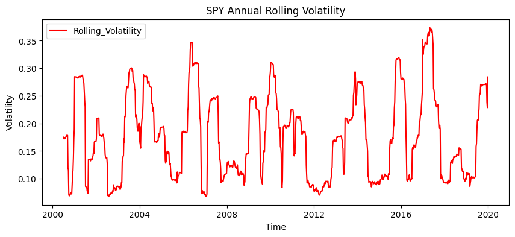
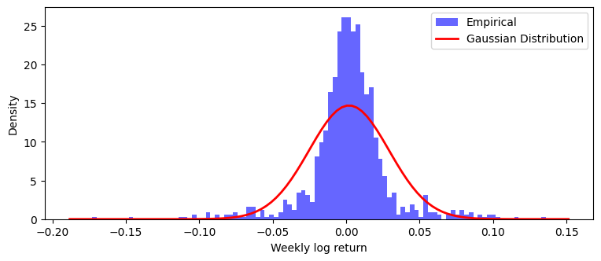
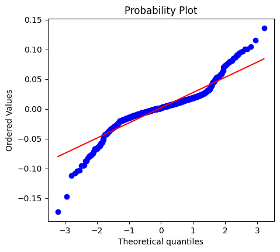
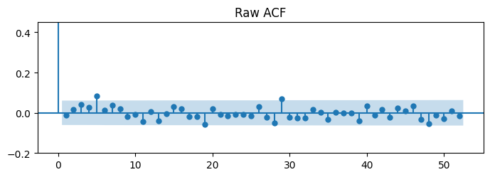
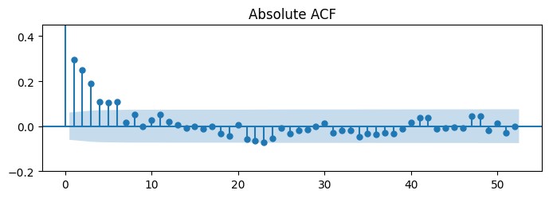
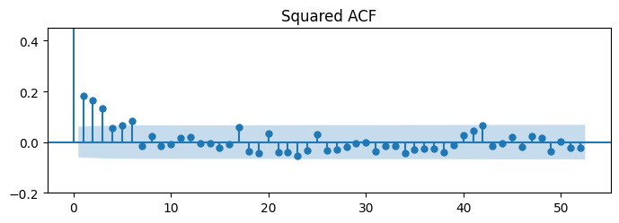

import yfinance as yf
import matplotlib.pyplot as plt
import pandas as pd
import numpy as np
from scipy import stats
from statsmodels.graphics.tsaplots import plot_acf
from scipy.stats import normResearch question
Markov-chain simulation
Transition-matrix estimation
Stationary distribution
Regime durations
Convergence experiment
Markov-switching return generatorx
Synthetic diagnostics
SPY–synthetic comparison
Sensitivity experiment
Conclusion
Sonuç paragrafında cevaplayacağın sorular
Kendi sonuçlarına göre şunları yaz:
Model raw-return ACF’sinin düşük olmasını üretti mi? Absolute-return ACF’sinde pozitif kalıcılık üretti mi? Pozitif excess kurtosis üretti mi? SPY’ın 9.48 kurtosis değerine ulaştı mı? Sentetik volatilite hafızası SPY’dan daha kısa mı? Hangi parametre hangi özelliği değiştirdi? Model neden henüz gerçek SPY modeli olarak kabul edilemez?
ilk hafta volatilite kümelenmesi olduğu görüldü ve getirinin bir tane normal dağılımdan değil 2 tane biri yüksek varyanslı biri küçük varyanslı olacak şekilde iç içe geçmiş dağılımdan gelmiş olabileceği varsayıldı
Gösterebilir: İki durumlu mekanizma bu istatistikleri üretebiliyor.
Başta bir bir transation matris bulucam ondan sonrasında ona 1 0 dizisi ürettirip sentetikle test ediyoruz
P_matrice = np.array([[0.95, 0.05],
[0.20, 0.80]])
#0 : low volatility
#1 : high volatility
np.random.seed(94)
rng = np.random.default_rng(seed = 94)
def simulate_chain(P,n,s0,rng):
states = np.zeros(n, dtype = int)
states[0] = s0
number_of_states = P.shape[0] # satir sayisi
for i in range(1,n):
current_state = states[i-1]
transition_probs = P[current_state]
states[i] = rng.choice(number_of_states, p = transition_probs)
return statesspy_weekly_data = pd.read_csv("../data/customized_spy_data_2000-2019.csv")
spy_data_size = len(spy_weekly_data["Log_Return"].dropna())
state_chain = simulate_chain(P_matrice, spy_data_size, 0, rng)
plt.figure(figsize=(10,8))
plt.plot(range(300), state_chain[:300], label = "Markov P Matrice States", color = "darkblue")
plt.title("Chain Plot")
plt.xlabel("Index")
plt.ylabel("States")
plt.legend()
plt.show()
states, counts = np.unique(state_chain, return_counts=True)
count_result = dict(zip(states.tolist(), counts.tolist()))
print(count_result)
{0: 796, 1: 247}today = state_chain[:-1]
tomorrow = state_chain[1:]
N00 = np.sum((today == 0 ) & (tomorrow==0 ))
N01 = np.sum((today == 0 ) & (tomorrow == 1))
N10 = np.sum((today == 1) & (tomorrow == 0))
N11 = np.sum((today == 1 ) & (tomorrow == 1))
N_matrice = np.array([[N00,N01],
[N10,N11]])
print(f"Calculated Matrice:\n {N_matrice}")
sum_of_rows = N_matrice.sum(axis=1,keepdims=True)
P_hat = N_matrice / sum_of_rows
print("\nReal P:\n", P_matrice)
print("\nEstimated P-hat:\n", P_hat)
print("\nDifferance (P-hat - P):\n", P_hat - P_matrice)Calculated Matrice:
[[755 41]
[ 40 206]]
Real P:
[[0.95 0.05]
[0.2 0.8 ]]
Estimated P-hat:
[[0.94849246 0.05150754]
[0.16260163 0.83739837]]
Differance (P-hat - P):
[[-0.00150754 0.00150754]
[-0.03739837 0.03739837]]#Stationary Distributionu bulma
# sQ = s
n = P_matrice.shape[0]
A = P_matrice.T - np.eye(n)
b = np.zeros(n)
A[-1, :] = 1 #normalize ediliyor
b[-1] = 1
s = np.linalg.solve(A,b)
print("Stationary distribution:", s)
print("sQ:", s @ P_matrice)
print("sQ = s :", np.allclose(s @ P_matrice, s))Stationary distribution: [0.8 0.2]
sQ: [0.8 0.2]
sQ = s : True#Ortalama Rejim kalım süresi geometrik hesaplanır çünkü mantıken düşündüğümüzde rejimin bir duruma gelmesi geometrik dağılır 0. rejimdeysek 1 e geçme olasılıgımız kaç denenin sonunda geçtiğimiz geometrik dağılımın sorusudur.
#X ~ Geom(p) ise E(X) = 1/1-pii dir proof omitted. pii - > rejimde kalma , 1-pii rejimdden cıkma
#Markov swithchinge göre memoryless bir yapı var olasılık gerçekten sahip mi yoksa rejimde durdurkça değişiyor mu
# Model-implied durations using the true transition matrix
theoretical_low_duration = 1 / (1 - P_matrice[0, 0])
theoretical_high_duration = 1 / (1 - P_matrice[1, 1])
# Empirical durations using transition counts
empirical_low_duration = (N00 + N01) / N01
empirical_high_duration = (N10 + N11) / N10
# Durations implied by the estimated transition matrix
estimated_low_duration = 1 / (1 - P_hat[0, 0])
estimated_high_duration = 1 / (1 - P_hat[1, 1])
print("\n--- REGIME DURATIONS ---")
print(f"Theoretical low-vol duration : {theoretical_low_duration:.4f}")
print(f"Empirical low-vol duration : {empirical_low_duration:.4f}")
print(f"P-hat low-vol duration : {estimated_low_duration:.4f}")
print("-" * 45)
print(f"Theoretical high-vol duration: {theoretical_high_duration:.4f}")
print(f"Empirical high-vol duration : {empirical_high_duration:.4f}")
print(f"P-hat high-vol duration : {estimated_high_duration:.4f}")
--- REGIME DURATIONS ---
Theoretical low-vol duration : 20.0000
Empirical low-vol duration : 19.4146
P-hat low-vol duration : 19.4146
---------------------------------------------
Theoretical high-vol duration: 5.0000
Empirical high-vol duration : 6.1500
P-hat high-vol duration : 6.1500#Şimdi bu rejimlerden markov switching modelini kullanarak 2 rejimli sistemden haftalık return elde edicem. 1040 hafta üzerinden bir return oluşturmak istiyorum markov switching model oalrak da rt = mu +std(st)Z(0,1) kullanıcam
logReturn_mean = spy_weekly_data["Log_Return"].mean()
low_vol_average_std = 0.013
high_vol_average_std = 0.052
def markov_switching_return(mu, low_vol,high_vol,regime,seed = 94):
local_rng = np.random.default_rng(seed)
local_noise = local_rng.normal(loc = 0, scale = 1, size = len(regime))
volatility_array = np.where(state_chain == 0, low_vol_average_std, high_vol_average_std)
log_return_array = logReturn_mean + (volatility_array * local_noise)
return log_return_array
log_return_array = markov_switching_return(logReturn_mean,low_vol_average_std,high_vol_average_std,state_chain)
print(log_return_array)[ 0.01427949 0.00779782 -0.00750212 ... -0.0145415 -0.00311308
0.13595884]synth_return = pd.DataFrame(log_return_array, columns = ["Log_Return"])
weekly_index = pd.date_range(start = "2000-01-07", freq = "W-FRI", periods = len(synth_return))
synth_return.index = weekly_index
print(synth_return.head()) Log_Return
2000-01-07 0.014279
2000-01-14 0.007798
2000-01-21 -0.007502
2000-01-28 0.003440
2000-02-04 0.004494synth_return["Rolling_Weekly_Volatility"] = synth_return["Log_Return"].rolling(window = 26).std()
synth_return["Rolling_Annual_Volatility"] = synth_return["Rolling_Weekly_Volatility"] * np.sqrt(52)
synth_return["Rolling_Weekly_Volatility"]
max_vol = synth_return["Rolling_Annual_Volatility"].max()
max_vol_date = synth_return["Rolling_Annual_Volatility"].idxmax()
min_vol = synth_return["Rolling_Annual_Volatility"].min()
min_vol_date = synth_return["Rolling_Annual_Volatility"].idxmin()
print(f"Minimum annual volatility: {min_vol:.1%} on {min_vol_date:%Y-%m-%d}")
print(f"Maximum annual volatility: {max_vol:.1%} on {max_vol_date:%Y-%m-%d}")Minimum annual volatility: 6.8% on 2002-08-02
Maximum annual volatility: 37.4% on 2017-04-28plt.figure(figsize=(10, 4))
plt.plot(synth_return.index, synth_return["Rolling_Annual_Volatility"], color="red", label="Rolling_Volatility")
plt.title("SPY Annual Rolling Volatility")
plt.xlabel("Time")
plt.ylabel("Volatility")
plt.legend()
plt.show() 
log_returns = synth_return["Log_Return"].dropna()
mu = log_returns.mean()
std = log_returns.std()
plt.figure(figsize=(9,3.5))
plt.hist(log_returns, bins=100, density=True, alpha=0.6, color='blue', label='Empirical')
xmin, xmax = plt.xlim()
x = np.linspace(xmin, xmax, 100)
p = stats.norm.pdf(x, mu, std)
plt.plot(x, p, linewidth=2, color="red", label="Gaussian Distribution")
plt.xlabel("Weekly log return")
plt.ylabel("Density")
plt.legend()
plt.show()
fig, ax = plt.subplots(figsize=(5,4.5))
stats.probplot(log_returns, dist="norm", plot=ax)
plt.show()
kurtosis_degeri = log_returns.kurtosis()
print(f"Excess Kurtosis Value: {kurtosis_degeri:.2f}")

Excess Kurtosis Value: 6.10for series, title in [(log_returns, "Raw ACF"),
(log_returns.abs(), "Absolute ACF"),
(log_returns ** 2, "Squared ACF")]:
fig, ax = plt.subplots(figsize=(7, 2.6))
plot_acf(series, lags=52, ax=ax, title=title)
ax.set_ylim(-0.2, 0.45)
plt.tight_layout()
plt.show()

